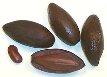

SAFARI
Users
Pili Nut
[Canarium ovatum]
This nut tree is native to the maritime regions of Southeast Asia, Papua New Guinea and Australia, but are a commercial crop mainly in the Philippines. Currently, the nuts are gathered in the wild, though there are a couple of commercial plantations started - the problem is the trees are very difficult to propagate reliably. A new variety, Poamoho, has been developed in Hawaii which has good production quality, and the seeds don't stick hard in the shells.
Raw, these nuts taste much like pumpkin seeds. Roasted they have a light nut flavor similar to Brazil nuts but are much softer. The dark brown seed coat is too thick to ignore and has to be removed. This is easily done if you split the two halves apart.
Pili nuts are about 8% carbohydrates, 12% protein and 70% fats and
have significant amounts of calcium, phosphorus, and potassium. Pili
nut fats are about 50% monounsaturated and 35% saturated. The The main
markets for these nuts are Hong Kong and Taiwan where they are an
ingredient in one type of moon cake, but they are shipped all over
Southeast Asia and the Pacific islands. The photo specimens were
lightly roasted and were typically 1-1/2 inches long and weighed 13
to the ounce.
Atile
[African Elemi; Atile (Nigeria); Mupafu (Africa, various spellings); Canarium schweinfurthii | similar Buah Dabai (Malay); Canarium odontophyllum]
This large tree is native to tropical Africa, from Senegal to Ethiopia
and south to Angola and Tanzania. It bears edible fruit, about 1.4 inches
long, with a high oil content. Flavor is similar to olives. It is usually
prepared by soaking in hot water to soften it. The fruit can be crushed
to produce oil, often used in marinades. The hard seeds also contain
oils and a useful oleoresin called "elemi". Oils from the seed are also
edible and sometimes used to replace shea-butter. This fruit is usually
harvested in the wild. Various parts of the tree are used medicinally.
Photo by Minette Lontsie distributed under license
Creative Commons
Attribution-Share Alike v4.0 International.
Buah Dabai
[Canarium odontophyllum]
This fruit native to Sarawak, Malaysia, is very similar to the Atile
(see above), and is also soaked in hot water so it will be edible. The
green flesh under the black rind is said to taste similar to Avocado,
and it is usually eaten with salt or soy sauce. As with the Atile and
Pili Nut, the seed kernel is edible.
Photo ©
Lindsay Gasik
used under fair use doctrine, (small, cropped, non-commercial).
Permission requested.
Ube
[Safou, Nsafu, African Bush Plum / Pear, Bush Butter, Butterfruit; Ube (Nigeria); Atanga (Gabon); Dacryodes edulis]
This large tree is native to tropical Africa, from Sierra Leone east to
Uganda and south into Angola. Some are now grown in Malaysia. It bears
edible fruit, about 1.5 inches to 4.7 inches long which can be eaten raw,
boiled or roasted. The flesh of cooked fruit has a texture similar to
butter. The fruit can be crushed to produce oil, and the hard seeds also
contain oils and chemicals of industrial use, particularly Gallic Acid.
Various parts of the tree are used medicinally. This fruit is both
harvested wild and grown on plantations.
Photo by Clematis contributed to the Public Domain.
Chinese Black Olive
 [Wu lan; Canarium pimela syn. C. tramdenum]
This fruit is preserved in brine and used similarly to black ripe
Oleaceae olives but is not really an olive at all. It is the fruit
of a large resinous tree, related to the frankincense tree, native to
Southeast Asia and southern China. The flesh is relatively thin and the
seed large and sharply pointed at both ends. Aside from the brined fruit,
the seed kernels inside the pits of this and related species are sold as
Canarium nut, Pili nut or Galip nut. The photo specimens were purchased
from a large Asian market in Los Angeles, packed in brine.
Chinese White Olive
 [Nam liap, Samo chin, Kana (Thai); kan-lan (China); buah cana (Malay);
Canarium album]
[Nam liap, Samo chin, Kana (Thai); kan-lan (China); buah cana (Malay);
Canarium album]
This olive shaped fruit is used similarly to Oleaceae olives but is
not really an olive at all. It is the fruit of a large resinous tree,
related to the frankincense tree, native to Southeast Asia and southern
China. Why it is called "white" is unknown to me. The fruits are used in
cooking both fresh, where they are somewhat resinous, and preserved by
soaking in brine and drying. They are particularly popular in Thailand and
Vietnam. This fruit is also used in Asian herbal medicines and cosmetics.
Photo by Takeaway distributed under license Creative Commons
Attribution-Share Alike v3.0 unported.